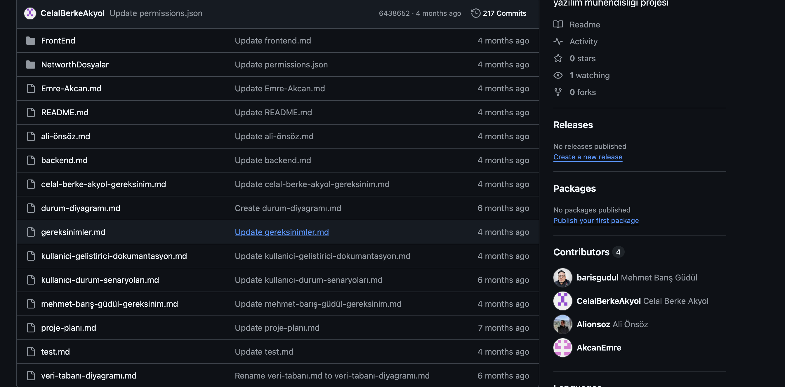

Benim adım Celal Berke Akyol kısaca kendimden bahsetmek gerekirse
yatırım finans alanını seven ve bu alana yenilikler katmayı seven
birisiyim. 15 yaşında ilk hisse senedimi metaTrader 5 üzerinden aldım.
17 yaşında html css kullanarak ilk web sitemi yaptım. Sonrasında
wordpress ile 10 a yakın web sitesi yaptım. Bunlardan bazıları kendim
için yaptım bazılarını ise sattım
Bu güne kadar toplamda 10 tane web sitesi yapmışımdır bunların ilki html css kullanarak one page bir websitesiydi. Sonrasında tam bir web sitesi yapmak için araştırma yaparken wordpress ile tanıştım wordpress üzerinden yaklaşık 10 tane site yaptım. Bunları listelemek gerekirse :
2019 - 2024
Bilgisayar mühendisi olarak kodlama geçmişinden bahsetmeden olmaz. İlk
önce web sitesi yapmayı öğrenmek istedim ve sırasıyla html,css,js, Sql
database, node.js, nosql database(mongosql) öğrendim.
2021 - 2022
Ardından üniversite başladım ve c ve java dersleri gösterildi. Bu
dillerde genellikle konsol uygulamaları yaptım
2023 - 2024
Bu yazın sonunda ekonomi ve finans çalışırken verileri incelemeye
zamanımın yetmemesi sonucunda arayışa girmiştim Sonrasında fintables,
stockeys gibi finans uygulamaları ekonomi içnide TMB ve TÜİK gibi
sitelerden yararlanıyordum. Buradaki verileri incelemeye zaman
yetmediği ve verimsiz olduğu için istatistik, veri analizi ve veri
görselleştirme alanında çalışmaya başladım. Python öğrendim şu anda
kaggle üzerinde arşatırmalarıma devam ediyorum
2024 2025 senesinde de yazılım mühendisliği projesini üstten alarak linkedin benzeri bir app yaptım
Projelerimi incelemek isterseniz Linkler